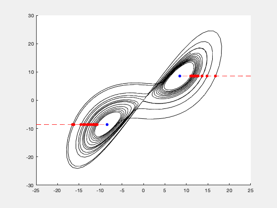
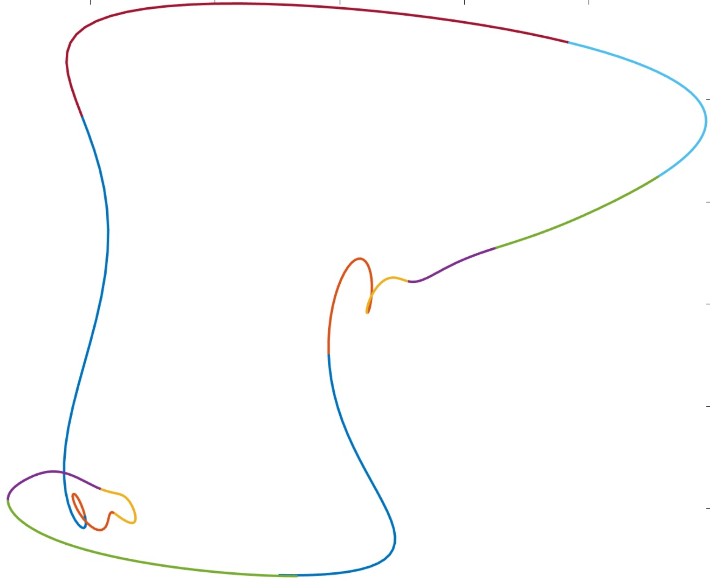

Publications & Research


Submitted
[1] Predicting State Switches in Chaotic Dynamical Systems.
With K. Pilkiewicz and M. Mayo.
Submitted March 2024
Abstract: Accurately forecasting a chaotic dynamical system is difficult because even the tiniest uncertainty in its initial state will rapidly compound over time, rendering the future state of the system completely unpredictable. This tendency is only exacerbated when certain configurational variables are opaque to measurement, a common challenge for real systems in nature. In this paper we focus on chaotic systems whose dynamics irregularly switch between two configurational subspaces of the strange attractor, and we propose a framework for casting these systems as pseudorandom bitstream generators. We then demonstrate, for two such systems (the Lorenz model and Chua's circuit), how cryptanalytic distinguishing functions can be constructed and used to make extremely accurate predictions about the future evolution of their dynamical state. Specifically, we show that, if we are given one bit of the model's coarse-grained, dynamical bitstream and the evaluation of the distinguishing function on the interval of the real-time trajectory encoding that bit, then we can predict the next bit of the binary sequence with near certainty; and we can correctly forecast, on average, the next 6-8 bits in a row before making an error.
[2] Periodic Orbits for State-Dependent Delay Differential Equations. With V. Naudot. Submitted April 2024.
Abstract: In this work we present a method to find periodic orbits for state-dependent delay differential equations. This method is based on a Newton-Kantorovich algorithm and is illustrated in the case of the one-dimensional Cubic Ikeda Map. Though this work is mainly numerical, the techniques developed are aimed to be a-posteriori used in the frame of computer-assisted proof.
In Preparation
[3] Existence and Stability of Nonlinear Waves: a Computer-Assisted Approach. With J. D. Mireles-James.
[4] Recruitment and Retention of STEM Teachers in High Need Schools: an Alumni Survey Analysis of Selected NSF Robert Noyce Programs. With D. Kumar and S. Moffitt.
[5] A Mixed Method Study of STEM Teacher Supply to High Need Schools in Florida and Texas. With D. Kumar, S. Moffitt, and C. Restrepo-Widney.
The above works [4] and [5] are in collaboration with FAU's College of Education and are funded by NSF Grant # 1950013.